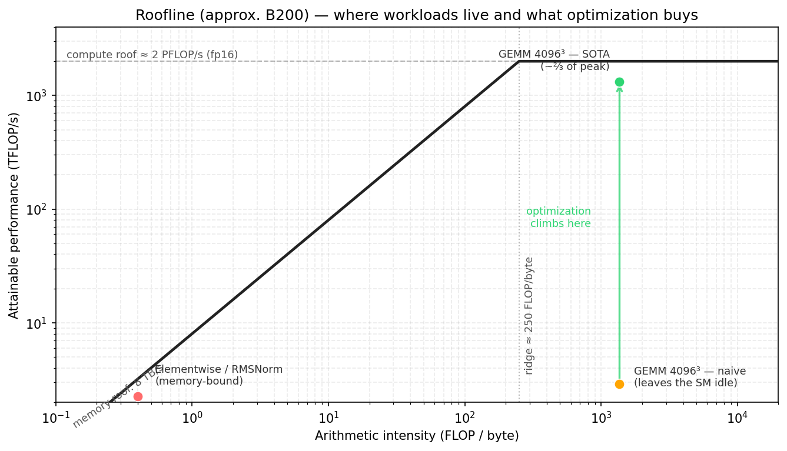

是什么让内核变得更快#
概述
roofline 型号为 kernel 提供了性能上限。上限由内存带宽或计算吞吐量设置。
算术强度决定了应用哪个上限。它是每个移动字节完成的有用算术工作量。
低算术强度意味着 kernel 受内存限制。主要的解决方法是移动更少的字节、更多地重用数据、熔断操作或使用更小的数据类型。
高算术强度意味着 kernel 可能受计算限制。主要任务是让 Tensor Cores 保持忙碌。
在现代 GPU kernels 中，主杠杆是重叠的。只要依赖图允许，TMA、Tensor Cores、epilogue 和存储就应该同时运行。
kernel 仅相对于上限而言较快。像 330 TFLOP/s 这样的数字本身可能看起来很大，但这在 GPU 上意味着非常不同的东西，它可以在密集的 fp16 或 bf16 Tensor Core 工作上维持 2 PFLOP/s 的量级。如果没有上限，就很难判断 kernel 是否已接近硬件限制或仍然使大部分芯片闲置。
roofline 型号给出了这个上限。它将 kernel 分为两个基本活动：移动字节和进行算术运算。如果 kernel 无法足够快地移动数据，则内存带宽会受到限制。如果 kernel 有足够的数据重用和足够的算术工作，计算吞吐量就会设定限制。
本章中的编号以 NVIDIA B200 作为运行示例。遵循 chap_background 的约定，我们使用圆形上限进行推理：大约 2 PFLOP/s 的密集 fp16 或 bf16 Tensor Core 吞吐量，以及大约 8 TB/s 的 HBM3e 带宽。确切的值取决于特定的器件、时钟、功率限制和测量设置，因此应将它们视为数量级限制而不是数据表常数。
屋顶线模型#
每个 kernel 都会移动数据并进行算术运算。 roofline 模型通过这两条路径中较慢的一条来限制 kernel。
计算上限是硬件的最大算术吞吐量。对于 B200 上的 Tensor Core GEMM，相关上限是 Tensor Core 吞吐量。对于标量或元素 kernel，相关上限可能是 CUDA 核心吞吐量或其他功能单位。
内存上限是带宽乘以算术强度。如果 kernel 对每个移动的字节执行很少的算术，则内存带宽会限制性能。如果每个字节执行许多操作，则内存不太可能成为限制因素。
基本的 roofline 界限是：
attainable FLOP/s <= min(peak FLOP/s, memory bandwidth * arithmetic intensity)
算术强度为：
arithmetic intensity = useful FLOPs / bytes moved
必须指定内存级别。对于 HBM roofline，字节为 HBM 字节。对于 L2 roofline，它们是 L2 字节。对于 SMEM roofline，它们是共享内存字节。本章默认的 roofline 为 HBM roofline。
在 roofline 图中，x 轴是算术强度，以每字节 FLOP 为单位进行测量。 y 轴是可达到的性能。记忆屋顶是一条斜线：
performance = bandwidth * arithmetic intensity
计算屋顶是一条扁线：
performance = peak FLOP/s
两者在山脊点相遇：
ridge point = peak FLOP/s / bandwidth
对于此处使用的 B200 整数：
ridge point ≈ 2000 TFLOP/s / 8 TB/s
≈ 250 FLOP/byte
低于该算术强度的 kernel 在 HBM roofline 下受内存限制。它无法达到峰值 Tensor Core 吞吐量，因为它无法每秒提供足够的字节来提供那么多算术。
高于该算术强度的 kernel 可能会受到计算限制。到那时，内存流量不再是一阶限制。剩下的工作是足够好地驱动计算单元以接近平屋顶。
roofline 模型的有用部分不是绘图本身。有用的部分是它告诉程序员哪个资源正在绑定。受内存限制的 kernel 不会变得更快，因为它的数学指令稍微好一些。受计算限制的 kernel 不会变得很快，因为它节省了一些不相关的字节。第一步是了解 kernel 位于山脊的哪一侧。

常见工作负载的算术强度#
算术强度通常是算法属性，然后才是实现细节。在写入 kernel 之前通常可以进行粗略的估计。
逐元素和归约#
元素 kernels（例如 GELU）和缩减式 kernels（例如 RMSNorm）可以读取和写入大型张量，同时每个元素仅执行少量的 FLOP。
他们的算术强度较低。它们位于山脊点左侧很远的地方。此类 kernel 的最佳版本通常会尝试接近内存带宽屋顶，而不是 Tensor Core 计算屋顶。
对于这些 kernels，重要的问题是机械性的：
Are the loads and stores coalesced?
Are bytes moved only once?
Can the operation be fused with a producer or consumer?
Can the dtype be smaller?
Can TMA or vectorized accesses help?
如果没有重用，没有融合机会，内存屋顶才是真正的天花板。
GEMM#
GEMM 的情况相反。它的算术强度随着问题的大小而增加，因为每个加载的 tile 都可以重复用于许多乘法累加运算。
对于平方 fp16 与 M = N = K 的 matmul，理想的算术强度约为：
AI ≈ 2N^3 / (3 * 2N^2)
= N / 3 FLOP/byte
该估计假设 A 和 B 被读取一次，C 被写入一次，beta 为零，片上重用是完美的，并且没有额外的元数据、填充或冗余流量。真实的 kernels 比这个理想模型移动更多的数据。但这个估计还是有用的。
在 N = 4096：
AI ≈ 4096 / 3
≈ 1365 FLOP/byte
它位于大约 250 FLOP/字节的 B200 脊线点的右侧。因此，大型 GEMM 在 HBM roofline 下受计算限制。目标不仅仅是减少 HBM 流量。目标是使用 Tensor Cores，让它们保持充足状态，并将数据移动与计算重叠，以便可以到达计算屋顶。
这就是为什么即使 GEMM 具有高算术强度，简单的 GEMM 也会很慢。该算法允许高性能，但实施可能会使 Tensor Cores 空闲。
Attention#
Attention 位于这两个极端之间。其算术强度取决于序列长度、头部尺寸、平铺、掩蔽以及中间张量是否物化。
标准 Attention 的关键问题是分数矩阵。如果 kernel 将分数矩阵写入 HBM，然后将其读回，则会在内存中移动一个大的中间值。 FlashAttention (FlashAttention 4) 通过将相关 tile 保留在芯片上并避免 HBM 往返来提高算术强度。
所以 Attention 优化部分是一个 roofline 问题，部分是一个调度问题。算法已更改，以便更少的字节进入 HBM。然后调度 kernel 以便剩余的移动和计算重叠。
当算术强度较低时#
如果 kernel 位于山脊左侧，则它是受内存限制的。 Tensor Cores 或 CUDA cores 可能空闲，因为瓶颈是字节，而不是算术指令。
有两种回应。
第一个反应是提高算术强度。这是更高杠杆的路径，因为它可以将 kernel 移向计算密集区域。
最重要的技术是融合。低算术强度的常见来源是将中间张量写入 HBM 并在下一个操作中立即将其读回。融合生产者和消费者将该中间产物保留在寄存器 SMEM 或 TMEM 中。 HBM 往返消失。
示例包括：
GEMM plus elementwise epilogue
normalization folded into a neighboring op
attention computed without materializing the full score matrix
第二种技术是阻塞重用。如果一个 tile 在驱逐之前被加载一次并使用多次，则每个字节支持更多的算术工作。 GEMM 的高算力强度正是源于这种重用。其他工作负载只要重复使用某个 tile 就可以使用相同的想法。
第三种技术是减少每个值的字节数。从 fp32 迁移到 fp16、fp8 或 fp4 可减少流量并增加每字节的 FLOP。当格式需要元数据、比例因子或额外的转换工作时，实际增益小于原始数据类型比率。块级 fp8 和 fp4 就是这样的示例。即便如此，较小的 dtype 通常是将 kernel 在 roofline 上向右移动的最直接方法之一。
第二个反应是接受记忆屋顶并尝试到达它。某些 kernels 没有足够的工作来融合或没有足够的重用来利用。纯复制、简单的元素运算或大张量的单遍缩减基本上可能是内存限制的。
在这种情况下，我们的目标不是冲破屋顶。目标是使其饱和。
这意味着：
move each byte once
avoid redundant reads
use coalesced or vectorized accesses
use TMA for regular bulk tiles
keep enough memory requests in flight
use smaller storage dtypes when the algorithm allows it
一旦受内存限制的 kernel 达到内存上限，进一步的计算优化将无济于事。加快速度的唯一方法是更改算法，使其移动更少的字节。
优化阶梯#
roofline 说明一切皆有可能。它没有说明达到该限制有多么容易。
理论上，大型 fp16 GEMM 可能会受到计算限制。这仅意味着 HBM 屋顶不是主要限制。这并不意味着任何实施都会达到 Tensor Core 的顶峰。缩小差距需要正确的指令、layouts、分段、同步和调度。
第三部分中的 GEMM kernels 将其显示为 B200 (通过 Warp 专业化和 cluster 扩展 GEMM) 上的一系列步骤。每个步骤都保持相同的基本算法，但改变了 tile 的计算或调度方式。
GEMM 阶梯中的第一个较大的测量跳跃是从 thread 复制平铺路径到 TMA 支持的路径的移动。 TMA 采用 CTA threads 的常规 GMEM -> SMEM 平铺移动，并让 kernel 通过硬件管理的批量复制来馈送 Tensor Cores。
第一次跳跃之后，主要的改进来自重叠和调度。 TMA 将未来的 tile 带入共享内存。 tcgen05.mma 异步运行。 epilogue 耗尽了之前的结果。软件 pipeline 和 warp specialization 排列这些部分，以便硬件引擎同时处于活动状态。
也没有规定每个中间步骤本身都必须更快。诸如 warp specialization 之类的步骤可能会暂时将资源花费在不会立即提高数量的结构上。如果它能够实现更简单的结构无法表达的后续重叠，那么它仍然可能是正确的步骤。

重叠是主要杠杆#
一旦 GEMM 受到计算限制并且已经使用 Tensor Cores，剩余的间隙通常来自空闲时间。
一个简单的 kernel 可能会这样做：
load tile k
compute tile k
store tile k
load tile k + 1
compute tile k + 1
store tile k + 1
该计划使硬件闲置。当负载运行时，Tensor Core 等待。当 Tensor Core 运行时，复制引擎可能处于空闲状态。当 store 耗尽时，两人可能都在等待。
相反，pipeline kernel 尝试一起运行独立的阶段：
load tile k + 1
compute tile k
store tile k - 1
这是本书后面使用的 Blackwell kernel 结构背后的中心思想。 TMA 处理异步数据移动。 tcgen05.mma 处理异步 Tensor Core 工作。 epilogue 和存储处理输出端。 mbarrier 对象连接各个阶段，以便每个消费者仅在实际需要其所需数据时等待。
重点不是删除依赖关系。重点是围绕它们进行安排。在加载 tile k 之前，tile k 的 MMA 无法启动。在 tile k 的 MMA 完成之前，tile k 的 epilogue 无法读取累加器。但 tile k + 1 的负载通常可以在 tile k 的 MMA 飞行时运行，并且 tile k - 1 的存储通常可以同时排水。
这就是为什么后面很多章节都关注异步机制：
TMA for global memory to shared memory movement
mbarriers for load completion and resource handoff
tcgen05 for asynchronous Tensor Core compute
TMEM for long-lived accumulators
warp specialization to separate producer and consumer roles
clusters for larger cooperative tiles and multicast
它们是不同的机制，但它们服务于相同的调度目标：让有用的工作同时在多个硬件路径上运行。
占用和资源压力#
重叠并不是唯一的延迟隐藏机制。更古老、更通用的机制是占用率。
占用率是驻留在 SM 上的工作量。如果一个 warp 停止，scheduler 可以运行另一个准备好的 warp。这通过保持独立 warps 池可用来隐藏延迟。
占用率受每个 SM 资源的限制。主要限制是寄存器、共享内存、warp 插槽和 CTA 插槽。每个 thread 使用多个寄存器或每个 CTA 使用大量共享内存的 kernel 的占用率可能较低，因为 SM 上只能容纳少量的 CTAs 或 warps。
许多现代的 Tensor Core kernels 故意以减少占用的方式花费资源。多级共享内存 pipeline 消耗 SMEM。大的寄存器片段会消耗寄存器。 TMEM 分配消耗 Tensor Memory 容量。 Warp 专业化可以为生产者或消费者角色保留整个 warps。
交易是经过深思熟虑的。这些 kernels 不是通过拥有许多不相关的 warps 驻留来隐藏延迟，而是通过在较少数量的驻留 CTAs 内显式重叠来隐藏延迟。如果其 pipeline 保持 TMA、Tensor Cores 和 store 繁忙，则低占用率 kernel 仍然可以很快。
这两种方法都不是普遍更好的。某些 kernels 需要高占用率，因为它们具有不规则的内存访问或有限的显式重叠。其他人则需要深度分期和专业化，因为这是有效满足 Tensor Core 的唯一方法。正确的问题不是入住率是否高。正确的问题是活动的硬件单元是否保持忙碌。
这以后能买什么#
本书的其余部分不断回到相同的诊断：
Which roof is this kernel under?
What resource is binding?
What change moves the kernel closer to that roof?
对于受内存限制的 kernels，答案通常是更少的字节和更好的带宽使用。这意味着融合、合并、矢量化访问、TMA（如果适用）以及更小的数据类型。
对于计算密集型 GEMM，答案首先是 Tensor Cores，然后重叠。 kernel 必须暂存操作数，发出异步 MMA 工作，保持 pipeline 满载，并在不停止计算路径的情况下排出结果。
对于 FlashAttention，第一步是通过将分数和概率 tile 保留在芯片上来提高算术强度。之后，它使用与 GEMM 相同的重叠工具：平铺数据移动、共享内存暂存、异步计算和仔细的资源切换。
这提供了实用的优化工作流程。估计算术强度。找到屋顶。决定 kernel 是受内存限制还是受计算限制。然后优化实际设定上限的资源。
如果没有这一步，kernel 优化就变成了猜测。有了它，每个变化都有一个原因：要么提高算术强度，使内存路径更接近带宽峰值，要么减少计算范围内的空闲时间。